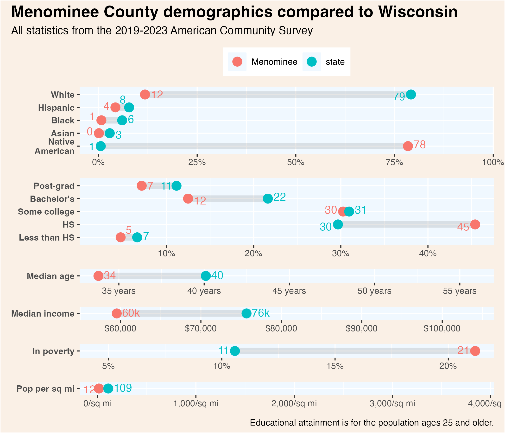
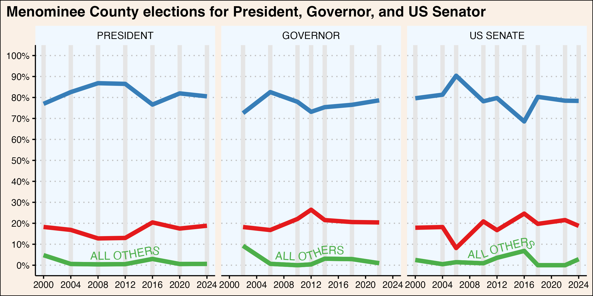
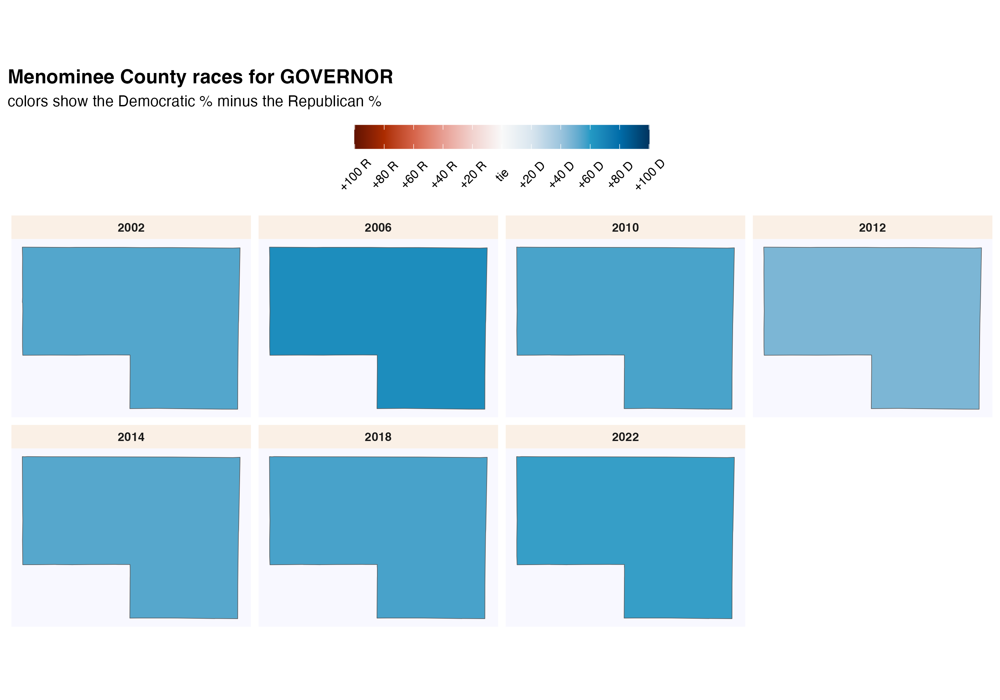
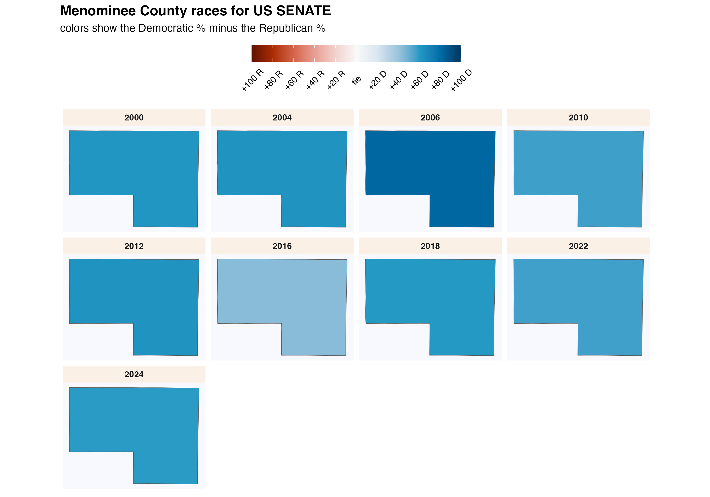

41 Menominee
Menominee County (pop. 4,300) is located in northeastern Wisconsin. The county is virtually coterminous with the Menominee Indian Reservation. About three quarters of the population identifies as Native American alone. The county has the youngest average age and highest poverty rate in the state. It is also, by some measures, the most Democratic-leaning county in the state.
41.1 Demographics

41.2 county election results

Click each column name to sort its values.
41.3 municipality election results
Although several census-designated places exist in Menominee County, the county techincally includes only a single town.
This map shows the location of each municipality in the county, as it existed in 2022.
These dot plots show the most recent election results in each municipality.
To more clearly illustrate recent changes in municipality voting trends, these scatterplots compare the most recent vote for president and senator with the shift from that office’s previous election.
These maps show show every election result since 2000 in each municipality.


Click each column name to sort its values.